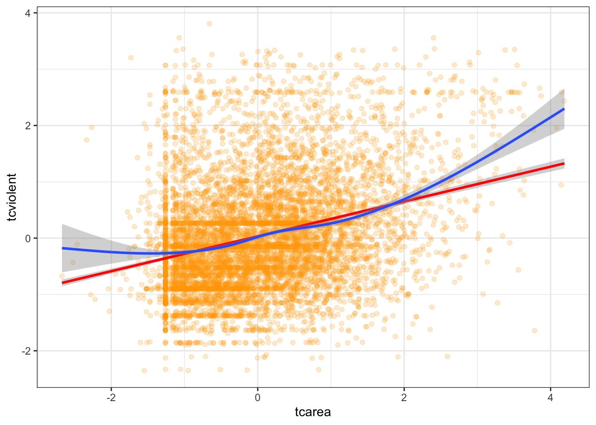
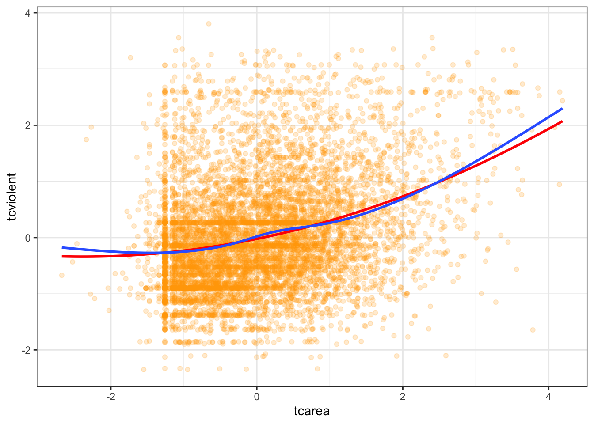

Chapter13 Dealing with non linearities (and unequal variances)
The diagnostics we have carried out so far suggest that perhaps we had a problem with non-linearities regarding the relationship between fear of violent crime and perceptions of antisocial behaviour. The residual plots seem to indicate that the model we fitted underpredict at low and high levels of perceptions of antisocial behaviour. Let’s look back at the marginal relationship between these two variables through a scatterplot.
As we said one of the fundamental assumptions of regression is that the model assumes that a straight line is a good representation of the data. If this is not the case you may better off using some form of nonlinear model. So, one of the first things you want to do when looking at your data is to assess if a straight line represents a reasonable summary for it. Let’s go back to the first simple model we explored and plot the smoothed conditional means
## Warning: Using `size` aesthetic for lines was deprecated in ggplot2 3.4.0.
## ℹ Please use `linewidth` instead.
## This warning is displayed once every 8 hours.
## Call `lifecycle::last_lifecycle_warnings()` to see where this warning was
## generated.## Warning in geom_line(data = BCS0708, aes(x = round(tcarea/0.1) * 0.1, y =
## tcviolent), : Ignoring unknown parameters: `fun.y`## `geom_smooth()` using formula = 'y ~ x'## Warning: Removed 3664 rows containing non-finite values (`stat_smooth()`).## Warning: Removed 3664 rows containing non-finite values (`stat_summary()`).## No summary function supplied, defaulting to `mean_se()`## Warning: Removed 3664 rows containing missing values (`geom_point()`).
Is the straight line a good summary? One way of exploring this when you only have one predictor is to use a Loess regression line. This form of local regression subsets chunks of data around your X axis to try to estimate a regression line that fits well a region of the data. These are the blue lines that you see plotted in the residual plots earlier. This visualisation posted online in the wonderful Simply Statistics blog.

ggplot(data = BCS0708, aes(x = tcarea, y = tcviolent)) +
geom_point(alpha = .2, position = "jitter", color ="orange") +
geom_smooth(method = "lm", color = "red", size = 1) +
geom_smooth() +
theme_bw()## `geom_smooth()` using formula = 'y ~ x'## Warning: Removed 3664 rows containing non-finite values (`stat_smooth()`).## `geom_smooth()` using method = 'gam' and formula = 'y ~ s(x, bs = "cs")'## Warning: Removed 3664 rows containing non-finite values (`stat_smooth()`).## Warning: Removed 3664 rows containing missing values (`geom_point()`).
We already knew from the residual plots we had a problem here, but hopefully this plots also helps you to see the problem more clearly. This plot seems to suggest that perhaps the relationship here is somehow curvilinear, although notice that the curvature takes place as the result of the underprediction in the regions of X with sparser data.
13.0.0.1 Using polynomial regression
What do you do in a situation such as this? There are a number of solutions, some of which are more complex than others. One fairly simple way of extending the linear model is by using polynomial regression. Essentially what this does is to incorporate a transformed predictor into the model with the intention of capturing the curvature apparent in the data. What we do is that we add additional terms to the model until we are satisfied we capture the pattern in the data.
So say we are working with a simple model of tcviolent ~ tcarea. We could try to fit a polynomial regression adding a second term with a squared tcarea. This would produce the following predicted line:
#Notice the arguments in the first geom_smooth(). We are asking ggplot to produce a linear model using the specified formula. This formula asks for a polynomial regression with a quadratic term added (that's why you see the 2). You may want to look at the help files for the poly() function, which is one of the ways of inserting polynomials in a R formula (the preferred way of doing it if you want to have more than a quadratic term).
ggplot(data = BCS0708, aes(x = tcarea, y = tcviolent)) +
geom_point(alpha = .2, position = "jitter", color ="orange") +
geom_smooth(method = "lm", formula = y ~ poly(x, 2), color = "red", size = 1, se=FALSE) +
geom_smooth(se=FALSE) +
theme_bw()## Warning: Removed 3664 rows containing non-finite values (`stat_smooth()`).## `geom_smooth()` using method = 'gam' and formula = 'y ~ s(x, bs = "cs")'## Warning: Removed 3664 rows containing non-finite values (`stat_smooth()`).## Warning: Removed 3664 rows containing missing values (`geom_point()`).
Essentially, adding this extra term allows the possibility of increasing slopes with tcarea and helps to model U-shaped patterns. If we still think that the non-linearities are not adequately captured we could try with a cubic transformation (raising to the power of 3) and adding this additional term. The more complex your polynomial, the more difficult may be to interpret your tabular results.
Another thing to note is that the higher order polyomial you add, the better your model fits. However that doesn’t necessarily mean that it is a better model. You might venture into what is known as overfitting, where your model fits your data greatly, but uses its predictive power. See this paper by Lever et al. in Nature to learn more.
Let’s return to the more complex model we were examining and rerun the model with a quadratic term added. When including quadratic terms as part of a formula in R we need to use the I()function for converting objects (or the poly() function).
##
## Call:
## lm(formula = tcviolent ~ tcarea + I(tcarea^2) + sex, data = BCS0708)
##
## Residuals:
## Min 1Q Median 3Q Max
## -3.6267 -0.5840 -0.1253 0.4740 4.2919
##
## Coefficients:
## Estimate Std. Error t value Pr(>|t|)
## (Intercept) 0.265422 0.015870 16.725 < 2e-16 ***
## tcarea 0.273647 0.011811 23.169 < 2e-16 ***
## I(tcarea^2) 0.047727 0.007628 6.257 4.12e-10 ***
## sexmale -0.592218 0.020238 -29.263 < 2e-16 ***
## ---
## Signif. codes: 0 '***' 0.001 '**' 0.01 '*' 0.05 '.' 0.1 ' ' 1
##
## Residual standard error: 0.9037 on 8008 degrees of freedom
## (3664 observations deleted due to missingness)
## Multiple R-squared: 0.1852, Adjusted R-squared: 0.1849
## F-statistic: 606.8 on 3 and 8008 DF, p-value: < 2.2e-16The near-zero p-value associated with the quadratic term suggests that it leads to an improved model. We can use the anova() function to quantify the improvement in the model.
## Analysis of Variance Table
##
## Model 1: tcviolent ~ tcarea + sex
## Model 2: tcviolent ~ tcarea + I(tcarea^2) + sex
## Res.Df RSS Df Sum of Sq F Pr(>F)
## 1 8009 6572.4
## 2 8008 6540.4 1 31.976 39.151 4.123e-10 ***
## ---
## Signif. codes: 0 '***' 0.001 '**' 0.01 '*' 0.05 '.' 0.1 ' ' 1In the output the first model is the one without the quadratic term (the straight line model) and the second model is the one with the added polynomial. What the anova() function is doing here is to run a hypothesis test that the two models fit the data equally well, whereas the research hypothesis is that the model with the quadratic term represents a better fit. The p value we observe is virtually zero. So clearly in this case adding a quadratic term represents an improvement to our model. If we compare the plot of the residuals against the fitted values we can see that the non-linear pattern that was evident in our simpler model washes away once we introduce the quadratic term.
#You would use this code to obtain only the fitted against the residuals.
residualPlots(fit_3, ~1, fitted = TRUE)
## Test stat Pr(>|Test stat|)
## Tukey test 4.6065 4.094e-06 ***
## ---
## Signif. codes: 0 '***' 0.001 '**' 0.01 '*' 0.05 '.' 0.1 ' ' 1
## Test stat Pr(>|Test stat|)
## Tukey test 1.2223 0.2216
## Test stat Pr(>|Test stat|)
## tcarea 0.2981 0.76561
## I(tcarea^2) 1.8972 0.05783 .
## Tukey test 1.2223 0.22159
## ---
## Signif. codes: 0 '***' 0.001 '**' 0.01 '*' 0.05 '.' 0.1 ' ' 1We can run the tests we used before to check for fit:
## Test stat Pr(>|Test stat|)
## tcarea 0.2981 0.76561
## I(tcarea^2) 1.8972 0.05783 .
## Tukey test 1.2223 0.22159
## ---
## Signif. codes: 0 '***' 0.001 '**' 0.01 '*' 0.05 '.' 0.1 ' ' 1We can see that the tests are no longer significant. Should we add a cubic term? The Loess line was not a simple curve, would a more complex model be required?
##
## Call:
## lm(formula = tcviolent ~ tcarea + I(tcarea^2) + I(tcarea^3) +
## sex, data = BCS0708)
##
## Residuals:
## Min 1Q Median 3Q Max
## -3.7352 -0.5846 -0.1276 0.4733 4.2846
##
## Coefficients:
## Estimate Std. Error t value Pr(>|t|)
## (Intercept) 0.272535 0.017115 15.924 < 2e-16 ***
## tcarea 0.263588 0.014888 17.705 < 2e-16 ***
## I(tcarea^2) 0.035936 0.013078 2.748 0.00601 **
## I(tcarea^3) 0.005696 0.005132 1.110 0.26708
## sexmale -0.591906 0.020239 -29.245 < 2e-16 ***
## ---
## Signif. codes: 0 '***' 0.001 '**' 0.01 '*' 0.05 '.' 0.1 ' ' 1
##
## Residual standard error: 0.9037 on 8007 degrees of freedom
## (3664 observations deleted due to missingness)
## Multiple R-squared: 0.1853, Adjusted R-squared: 0.1849
## F-statistic: 455.4 on 4 and 8007 DF, p-value: < 2.2e-16In this case, we have less evidence that adding this additional term would improve the fit. As you can see the p value associated with the cubic term is not significant.
As we discussed when introducing regression interpreting the coefficients can get tricky. That is certainly the case when you add polynomial regression. The description of results in this case will typically focus on the general pattern of results, rather than in the regression coefficients for your transformed variable. One solution to this is to produce graphical displays of the relationship such as those that can be obtained with the effects package.
## lattice theme set by effectsTheme()
## See ?effectsTheme for details.
We have discussed transforming the variable by squaring it, but other curvilinear patterns may require other transformations such as taking the inverse (1/X), when there is a decreasing negative effect of the predictor on the response variable, or taking the square root of X, when there is a dminishing positive impact of the predictor on the response variable -refer to Weisburt and Britt, 2014: 516-518. There are also other more sophisticated ways of accommodating non linearities -by means of fitting regression splines or using generalised additive models. But those models are well beyond the scope of this course.